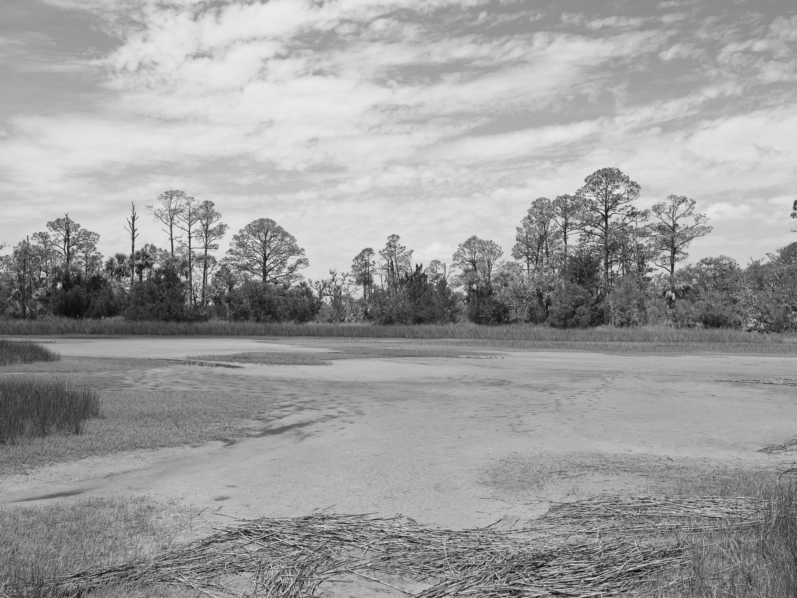
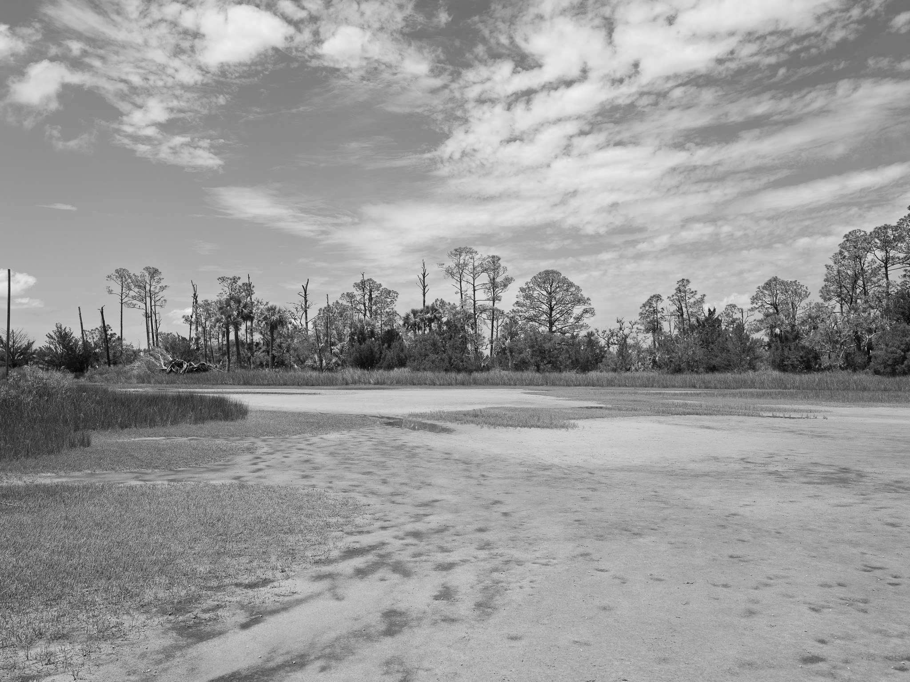
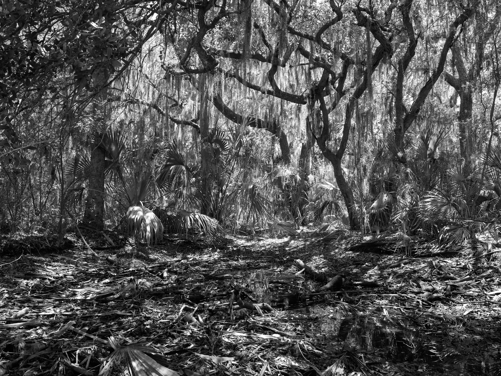
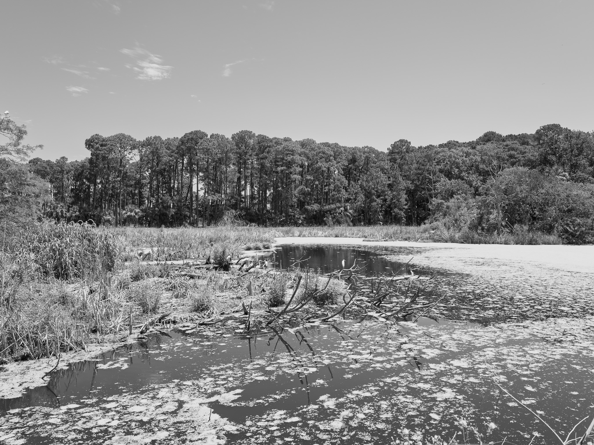
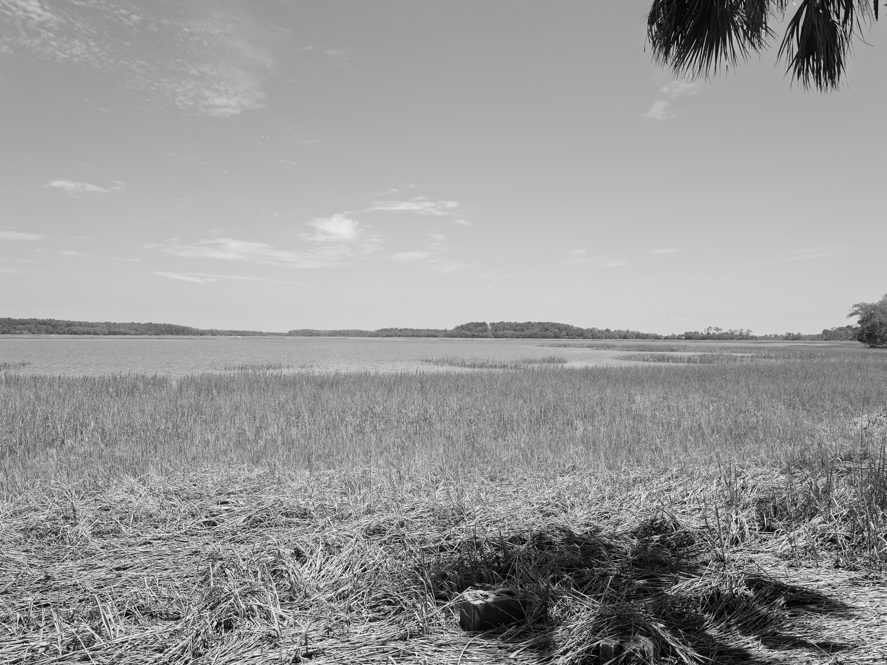
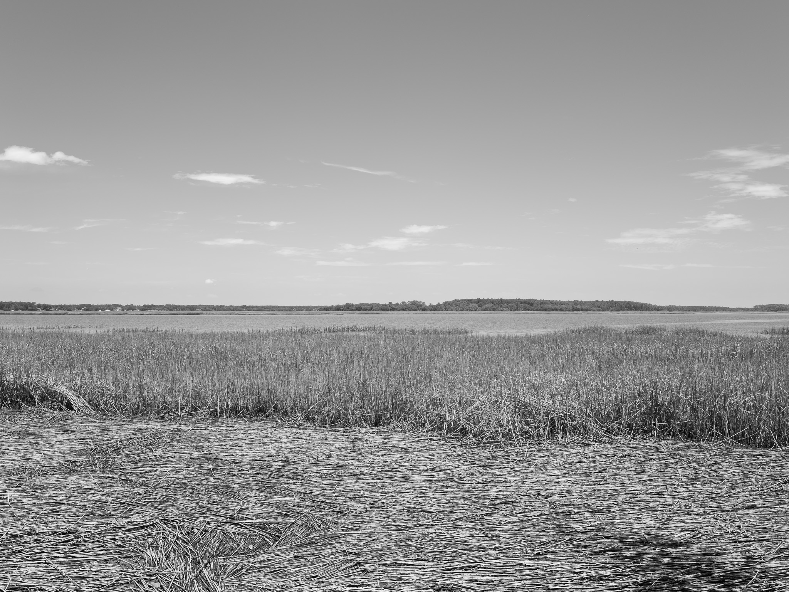

Public Lands Institute
Map
Images
Archive
About
Pinckney Island National Wildlife Refuge
SC

Pinckney Island National Wildlife Refuge 1 · 2026-07-02
_DSF3699.jpg

Pinckney Island National Wildlife Refuge 2 · 2026-07-02
_DSF3700.jpg

Pinckney Island National Wildlife Refuge 3 · 2026-07-02
_DSF3712.jpg

Pinckney Island National Wildlife Refuge 4 · 2026-07-02
_DSF3727.jpg

Pinckney Island National Wildlife Refuge 5 · 2026-07-02
_DSF3733.jpg

Pinckney Island National Wildlife Refuge 6 · 2026-07-02
_DSF3748.jpg
View all 6 images →
← Ohoopee Dunes Wildlife Management Area
Chisholm Creek Park →